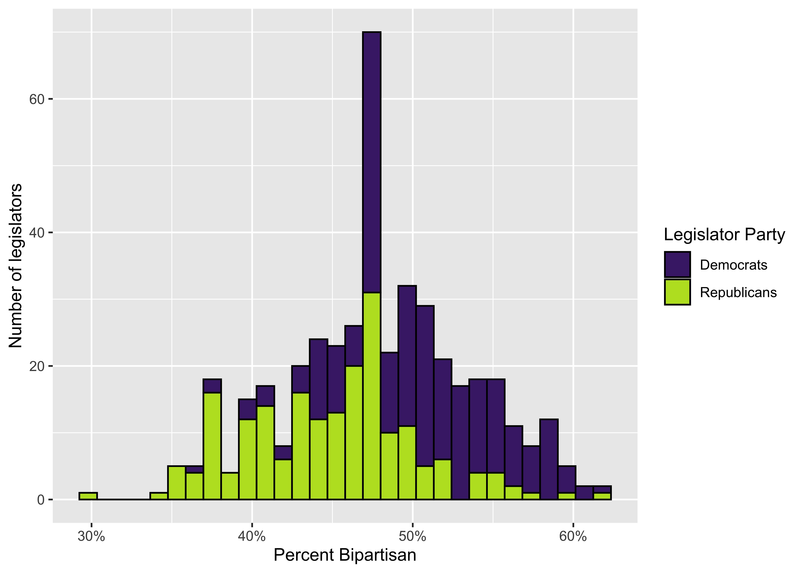
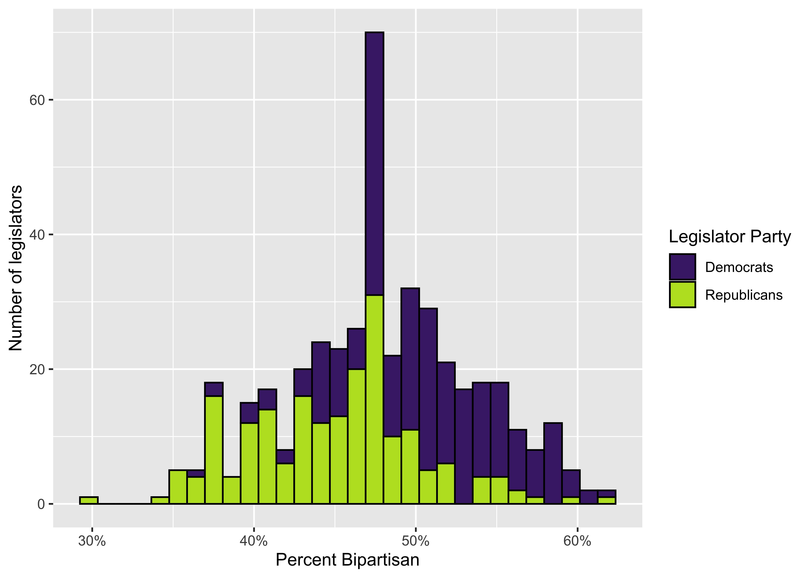

Saving 7 x 5 in image
`stat_bin()` using `bins = 30`. Pick better value with `binwidth`.
`stat_bin()` using `bins = 30`. Pick better value with `binwidth`.
In the social sciences we talk a lot about differences across space and time. But how do we know which differences are meaningful?
Michael Flynn
September 3, 2021
In the social sciences we talk a lot about groups being different from one another. We might also talk about things like spending on certain programs going up or down over time. While this can seem direct, comparing quantities of interest can often be made complicated by a variety of factors. Below I’ll provide an overview of some of the issues I want you to be aware of as we begin to read journal articles and other readings that will invariably discuss inter-group and inter-temporal differences.
Comparing group behaviors can be complicated because in addition to differences between the groups, there is also variation in how the individual members of those groups tend to behave. Let’s imagine that we want to compare bipartisanship in US foreign policy. There are different metrics we could use, but we’ll settle for Congressional voting patterns. We might want to know if Democrats are more or less bipartisan than Republicans. We could imagine that we’re going to sample votes taken by members of Congress where each member of Congress votes on a series of votes during each year—let’s say 100 votes—and we could code those votes as bipartisan (1) or not (0). Rather than collecting data on every vote we decide to just sample from one year. At the end we might end up with a distribution of bipartisan votes that looks like this:
Saving 7 x 5 in image
`stat_bin()` using `bins = 30`. Pick better value with `binwidth`.
`stat_bin()` using `bins = 30`. Pick better value with `binwidth`.
The figure shows the distribution of the percentage of the 100 votes each legislator makes that are bipartisan—A value of 60 means that 60 of the 100 votes, or 60% of the 100 votes, a given legislator makes are bipartisan and 40% are not. We’ll focus on the raw count of votes rather than percent for now, but the 100 vote total simplifies this to make these voting totals more intuitive for present purposes. Dealing with proportional measures can get more complicated, but we’ll set some of that aside for now.
So are Republicans and Democrats different? Are they meaningfully different? How can we tell? The idea here is that when we’re dealing with data of the kind shown in the above example, we want to understand if the differences between two groups are 1) systematic or are they the result of chance, and 2) how big or substantively meaningful are the differences we observe? Making these sorts of judgements by looking at this figure alone is difficult.
For example, a simple comparison of the mean values of the two parties suggests that Democrats have a higher rate of bipartisanship than do Republicans. But the data shown above are also very noisy, they represent just a sample from a broader set of votes, and there’s quite a bit of overlap between members of each group, so we can’t be sure from casual observation that the differences we think we observe are accurate representations of broader differences between the two groups. This is where we turn to some basic statistical methods that can help us to estimate if and how two or more groups might be different from one another with respect to some outcome of interest.
The sorts of statistical methods used by researchers vary quite a bit depending on the question at hand, but for this basic example we can start with something really simple called a difference of means test, or a t test. This test allows us to look at the values of two continuous variables and compare their mean values. Another way to think of this is to compare the values of a given variable across two groups. In our example we’re interested in comparing the mean number of bipartisan votes for Republican and Democratic legislators. So political party represents our grouping variable and the outcome of interest is the count of the number of bipartisan votes.
| Parameter1 | Parameter2 | Mean_1 | Mean_2 | Diff | CI | CI_low | CI_high | t | df_error | p | Method | Alternative |
|---|---|---|---|---|---|---|---|---|---|---|---|---|
| Republican | Democrat | 44.88 | 50.51 | -5.63 | 0.95 | -6.6 | -4.67 | -11.47 | 406.57 | 0 | Welch Two Sample t-test | two.sided |
The output in @ref(tab:t-test-example) resembles the output for a regression model that we’ll discuss below, but is much simpler. It tells us the names of the two groups, the mean score for each of the two groups, the difference between those mean scores, and the confidence interval, confidence interval limit values, and the test statistic or t value. There is also more information contained in the table about the type of t test and the direction of the test. Sometimes you might want to look at whether or not a group has a score that is higher or lower than another group, meaning that you have some specific direction in mind. In our case we’re content to just look at a non-directional test to see if the means of the two groups are different without hypothesizing the direction of that difference in advance. For now our basic hypothesis is that the groups are different, and our null hypothesis is that there is no difference between the two groups.
So is there a difference in the bipartisan voting behavior of the two parties? The t test shows that the Republican score is indeed lower than the Democratic score, and that this difference is statistically significant at the 0.95 level. The Democratic score is 5.63 higher than the Republican score as can be seen in the “Diff” column, and the test yields a test statistic of -11.17. This translates to a very low p value, which indicates the probability of seeing a test statistic greater than or equal to the observed test statistic of the null hypothesis were true. This is a lot, I know, but the important point is that researchers generally want low p values.
So this result is statistically significant, but is it substantively significant? That’s up to the researcher and requires some knowledge of the specific topic and/or broader domain expertise. In this example we see that, on average, Republican legislators case a bipartisan vote about 45% of the time and Democratic legislators case a bipartisan vote about 50% of the time. This this case we’re looking at a difference of approximately 5 percentage points. Again, whether or not this is substantively meaningful requires a lot of additional context, and my purpose here is less to tell you the answer to that specific question for this hypothetical and more to help you to learn to be thoughtful and cautious when consuming statistical analyses.
The t test represents a very simple approach to analyzing the differences between two groups. While this can be useful, sometimes our data and the relationships between variables of interest are too complicated for a simple t test. In some cases we might want to know how groups compare when taking into account a number of other factors. Regression models are a broad class of statistical tools that allow us to model more complex relationships among various predictor and outcome variables. A fuller treatment of regression models is more than I want to get into for the purposes of this class, but there are a couple of points I want to highlight.
| Model 1 | |
|---|---|
| Republicans | −5.634*** |
| (0.487) | |
| Intercept | 50.509*** |
| (0.331) | |
| Num.Obs. | 434 |
| R2 | 0.236 |
| R2 Adj. | 0.234 |
| AIC | 2643.2 |
| BIC | 2655.4 |
| Log.Lik. | −1318.600 |
| F | 133.598 |
| RMSE | 5.05 |
| + p < 0.1, * p < 0.05, ** p < 0.01, *** p < 0.001 |
First, Table @ref(tab:linear-regression-example) shows the results of a regression model where we model bipartisan votes as a function of party identification. There’s a lot here but we’re only going to focus on a couple of points.
First, the higlighted row with the red text is really what we’re interested in when comparing the two parties as we discuss above. The left column shows us the name of the variable—in this case it’s the group we’re interested in, which is the political party of the observed legislator. The right column shows us the correlation coefficient. Basically this tells us how big the difference is between the Democratic legislators (the reference group here) and the Republican legislators. Note that the number listed here, -5.634, is the same as the number listed in the t test above!
The asterisks next to the coefficient represent the level of statistical significance associated with that coefficient. This is often used as a marker of importance, but for reasons we’ve discussed briefly above, this isn’t always a great basis on which to judge the substantive significance of a result.
Where do these stars come from? Well, the number in the parentheses below the coefficient is the standard error of the coefficient. Basically, you divide the coefficient value by the standard error (i.e. \(-5.64/0.48\)) and (according to some arbitrarily defined conventions) a coefficient earns another asterisk every time that resulting ratio crosses a particular threshold. Don’t worry about that too much right now.
The Intercept represents the expected value of the outcome when the other predictor variables are set to 0. In this case the intercept represented the mean value of the bipartisan voting indicator (our outcome) when the Republican variable is set to 0. In other words, this is the mean score for the Democrats! See above in the t test table to check it out (there’s some minor rounding)!
There are other details here that can be useful, like the “N” or the number of observations. This tells you how many times we’re observing the phenomenon of interest. We often want more information, but a larger N doesn’t solve all our problems if there are other serious flaws with our measurement strategy or research design.
At the bottom of the table you can often find a listing of the significance thresholds. Each symbol corresponds to a particular p value. Remember that we derive these p values from the coefficient and the standard error. You can have very very small p values for coefficients with very very small substantive effects, so this is not equivalent to the importance of a coefficient. I can’t say that enough!